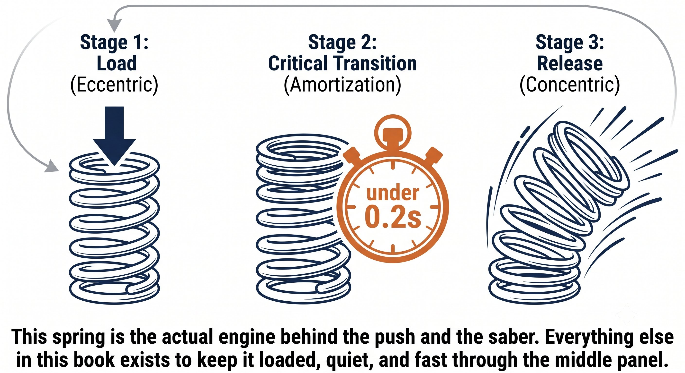
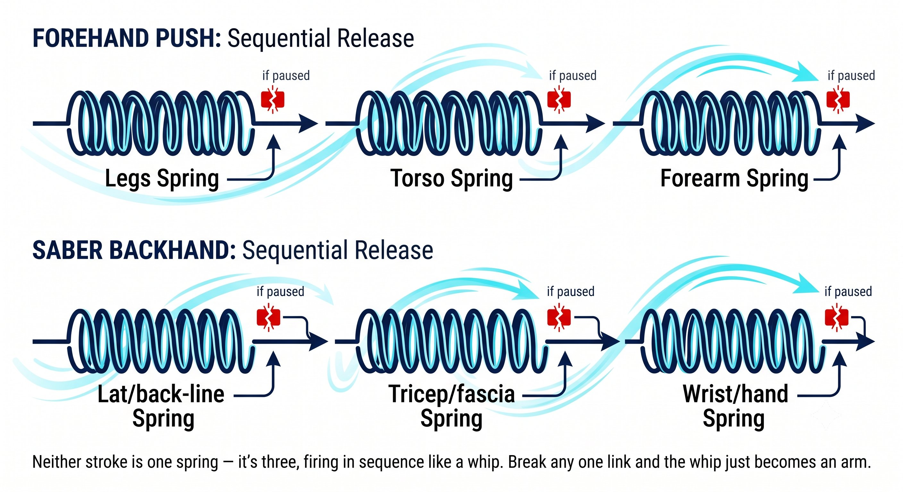
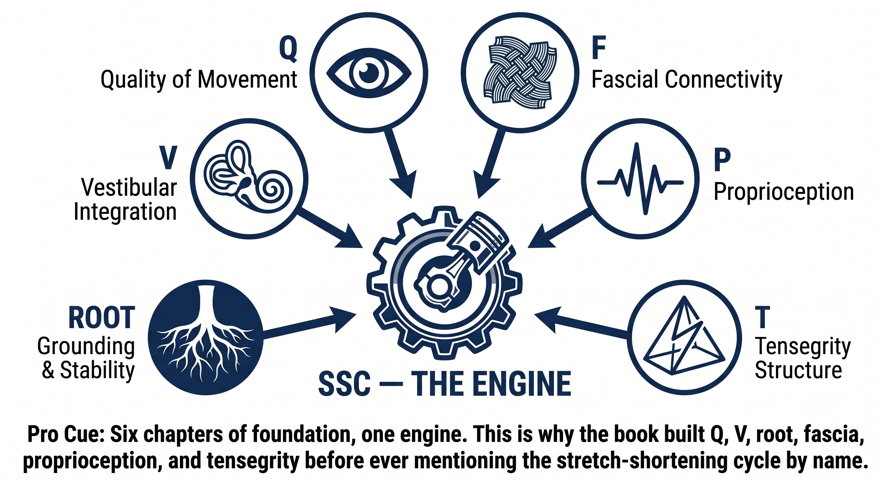

Chapter 12: Stretch-Shortening Cycle
(English version of Chapter 12 in the United Tennis Handbook)
CHAPTER 12

Figure 1
STRETCH-SHORTENING CYCLE
The Engine (SSC)
Everything built so far — Q, V, root, F, P, T — exists for one reason: to make this cycle happen efficiently.
SSC isn't a theory. It's physics. Stretch a muscle-fascia unit under load and it snaps back — but only if you don't pause.
— Henry Pham
SSC: Three Phases, One Rule
The stretch-shortening cycle unfolds in three phases:
Figure 12.1: The SSC engine in three phases. Eccentric loads the spring, amortization is the crossover point — no pause allowed — concentric releases it. The whole chapter is this one cycle.

Figure 2
The Principle
The amortization phase is where champions are made or lost. Pause longer than 0.2 seconds and elastic energy turns to heat. Keep the transition under 0.2 seconds and smooth, and that energy is free.
The One Rule: No Pause
A hitch isn't a technical flaw. It's an SSC leak.
— Henry Pham
Pause at the end of the takeback — even for a tenth of a second — and elastic energy dissipates as heat. All that's left is muscle contraction alone. That's why:
– A hitchy takeback becomes a muscled swing with no weight on the ball.
– A smooth loop into the drop into the swing becomes an elastic swing — a heavy ball with an effortless feel.
– The "feel" of push or saber is nothing more than the SSC working. A muscular hit means the SSC failed.
Where SSC Lives in Your Two Shots
The forehand push runs on a chain of three SSCs in series:
The saber backhand runs its own SSC chain:
Figure 12.2: Forehand push runs on three SSCs in series — legs, torso, arm. Saber backhand runs two — lat, tricep/fascia. Different chains, same principle: stretch, no pause, snap.

Figure 3
The Amortization Phase: Where Energy Dies
Amortization is the transition itself. The research is consistent: cross 0.2 seconds and elastic energy dissipates as heat. Stay under 0.2 seconds and keep it smooth, and you get up to 30 percent extra force for free.
Figure 12.3: Cross 0.2 seconds of amortization and elastic energy drops off a cliff. At continuous crossover (0ms) you keep 100%. At 100ms you're at 70%. At 200ms you're at 30%. Past 300ms it's gone. The amortization phase isn't a pause — it's a countdown.

Figure 4
The Rule
Stretch has to flow directly into shorten. No pause. The crossover point of the figure-8 is the amortization phase — make it fast and smooth.
How Q, V, Root, F, P, and T Enable SSC
Figure 12.4: Six chapters, one engine. Q parks the eyes, V quiets the head, Root anchors the feet, F holds the tension, P feels the stretch, T keeps the structure honest. All of it funnels into one cycle: stretch, no pause, snap.
Coach's Note
The bounce-drop-push drill: drop the ball, let it bounce, hit a forehand. The constraint is that the racket must already be moving forward before the ball reaches the top of its bounce. That constraint forces a short amortization. Wait for the ball to come back down and you've already paused — no SSC.
How to Train SSC for Tennis — Not the Gym
Don't train the muscles. Train the timing of the amortization phase:
1. Bounce-drop-push drill: drop the ball, let it bounce, hit a forehand. Constraint: the racket has to be moving forward before the ball reaches the top of its bounce. This forces a short amortization.
2. Counter-movement push: set up the forehand, let the racket head drop below the hand under gravity alone, then push immediately. Don't hold the low position — feel the stretch in the forearm, then let it snap.
3. Saber stretch-snap: hold the racket with your non-dominant hand high behind you, let go, and immediately pull with the lat. The release is eccentric, the pull is concentric — no pause between them. It should feel like a whip, not a muscle.
4. Continuous loop shadow: run 10 forehands without ever stopping the loop at the back — the racket never stops moving. This is pure SSC training. The instant it stops, you lose the tensegrity tension.
The Rule
SSC equals eccentric, then under 0.2 seconds of amortization, then concentric. Train the transition — not the muscles.
The SSC Checklist
STRETCH. NO PAUSE. SNAP. THAT'S THE WHOLE THING.
– The takeback loads eccentrically — feel the stretch in the spiral or back line.
– No pause at the end of the takeback — a continuous loop into the drop into the swing.
– Amortization stays under 0.2 seconds — a smooth crossover of the figure-8.
– Contact: a firm 30-millisecond peak that transmits the SSC energy through tensegrity.
– If the forearm burns, it tightened too early and killed the SSC. If the elbow hurts, it stayed loose at contact and nothing transmitted.
– Train with: bounce-drop-push, counter-movement push, saber stretch-snap, and continuous loop shadow.
Where This Leads
This chapter establishes SSC as the engine in Q-V-ROOT-8-45-Impulse-Jin CORE. Chapter 13 covers the figure-8 as the regulator that guarantees a no-pause SSC. Chapter 14 covers the 45-degree plane as the sweet spot. Chapter 15 covers the brake and the pulse as the release mechanism. Chapter 16 covers jin as the result.